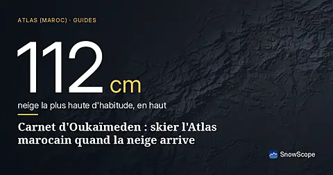
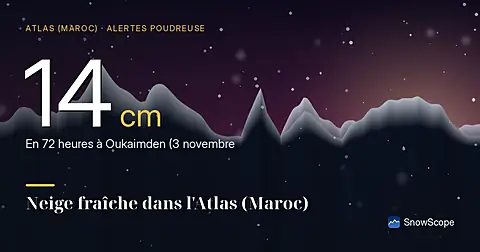

Oukaïmeden ou les Alpes en décembre : neige, prix vérifiés, vraie différence
Un 15 décembre type, Oukaïmeden se situe à 16 cm de neige en mi-hauteur tandis que Val Thorens atteint 89 cm et Chamonix 65 cm. Nous n'avons trouvé aucun tarif officiel en ligne pour Oukaïmeden, nous avons donc comparé ce que nous avions pu vérifier : 46 hivers d'historique de neige et les vrais tarifs des remontées des Alpes.
Consultez les prévisions neige en temps réel pour Oukaïmeden sur l'application SnowScopeHauteurs de neige, alertes poudreuse et carte 3D, gratuitement.
Épaisseur de neige début décembre selon trois chaînes
Le 15 décembre un hiver type, le tableau change nettement selon l'altitude et la localisation. Les pentes mi-hauteur d'Oukaïmeden (2 929 m) ne retiennent que 16 cm, et un hiver sur neuf seulement atteint 50 cm. La mi-montagne de Val Thorens (2 498 m), plus basse qu'Oukaïmeden, affiche 89 cm avec la moitié de tous les hivers à 50 cm ou plus. La mi-hauteur des Grands Montets de Chamonix (2 001 m), encore plus basse, enregistre 65 cm les décembres types.
Les altitudes racontent l'histoire. Au sommet de Val Thorens (3 175 m) vous trouvez 159 cm le 15 décembre. Au sommet de Chamonix (2 768 m), 157 cm. Le pic d'Oukaïmeden (3 258 m) atteint 17 cm. L'Atlas reçoit moins d'humidité en décembre ; les Alpes font face aux tempêtes atlantiques et bénéficient de leurs pentes mi-hauteur plus élevées. Pour les skieurs de décembre, les Alpes offrent une couverture bien plus fiable.

Ce que les chances de bonne couverture signifient vraiment
Le 15 décembre, quatre hivers sur cinq à Val Thorens affichent 50 cm ou plus. À Chamonix, c'est trois sur cinq. À Oukaïmeden, un seul sur neuf. C'est important si vous réservez une semaine à l'avance : les Alpes garantissent presque une neige skiable à mi-décembre ; l'Atlas ne le garantit pas. L'écart s'élargit en direction de Noël. Le 25 décembre, 93 % des hivers à Val Thorens dépassent 50 cm, contre seulement 13 % à Oukaïmeden mi-montagne.
Forfaits remontées : ce que nous pouvons vérifier
Val Thorens offre de la clarté. Le forfait jour adulte Les 3 Vallées coûte 75,70 euros du 5 au 18 décembre 2026 (basse saison), puis 84,20 euros à partir du 19 décembre. Le Mont-Blanc Unlimited de Chamonix varie de 75 à 104 euros par jour entre le 28 novembre et le 18 décembre, le prix augmentant chaque semaine.
Oukaïmeden ne dispose d'aucun tarif officiel en ligne au 13 novembre 2026. Les forfaits et les locations se règlent sur place. Nous ne publions pas de prix plutôt que de deviner. Pour un skieur européen, l'absence de certitude tarifaire s'ajoute au risque de réservation.
Où se situent les vraies économies
Si vous habitez à Marrakech, Oukaïmeden se trouve à 50 km : pas de vol, pas une semaine de location, pas d'hôtel loin de chez vous. Pour un local, c'est un vrai avantage. Pour un Européen, le vol vers le Maroc remplace le vol vers la France, et coûte un argent similaire. Le prix du forfait importe moins que les probabilités de neige : payer 75 euros pour 89 cm, c'est mieux que de ne rien payer pour 16 cm et trouver des rochers.
Quand Oukaïmeden a du sens
Décembre est tôt dans le cycle de l'Atlas. Février et mars sont les mois de pointe : la mi-montagne affiche en moyenne 44 cm en février et 53 cm en mars, la moitié des hivers atteignant 50 cm ou plus. Un voyage en décembre fonctionne mieux comme une sortie rapide depuis Marrakech après une tempête de neige, pas comme des vacances réservées des mois à l'avance. Par contraste, les Alpes gardent les skieurs de décembre en sécurité avec leur profondeur mi-mois fiable et leurs sommets plus élevés.
Conseils aux skieurs
- Alpes avant le 19 décembre : réservez le tarif basse saison des Les 3 Vallées à Val Thorens pour une neige mi-montagne garantie de 89 cm type.
- Chamonix : les tarifs augmentent en décembre ; réservez tôt pour le tarif début de saison de 75 euros si vous pouvez vous engager sur des dates avant le 18 décembre.
- Oukaïmeden : traitez-le comme une sortie dernière minute depuis Marrakech après une tempête, pas comme une réservation d'une semaine. Demandez les tarifs des remontées à votre arrivée.
- Pour une semaine de ski européenne en décembre, les Alpes offrent de meilleures chances que l'Atlas. Prévoyez Oukaïmeden pour février ou mars à la place.
- Consultez la carte de neige SnowScope la semaine avant votre départ ; les conditions varient bien plus dans l'Atlas que dans les Alpes.
À propos de ces chiffres
Les hauteurs de neige des stations sont la neige la plus épaisse sur le haut du domaine à la date indiquée ; ce sont des estimations pour une zone, pas une mesure en un point. Les prévisions peuvent changer. Consultez toujours le bulletin d'avalanche officiel avant le hors-piste.
Citer ce bulletin
Pour la recherche, l'enseignement ou la presse : chiffres et graphiques réutilisables librement sous CC BY 4.0 avec cette citation.
SnowScope (2026), Oukaïmeden ou les Alpes en décembre : neige, prix vérifiés, vraie différence, https://snowscope.app/blog/fr/2026/11/oukaimeden-ou-alpes-week-end-ski-decembre-prix.html, consulté le 2026-11-14
SnowScope (Atlas Labs). (2026, November 14). Oukaïmeden ou les Alpes en décembre : neige, prix vérifiés, vraie différence. SnowScope snow reports. https://snowscope.app/blog/fr/2026/11/oukaimeden-ou-alpes-week-end-ski-decembre-prix.html
BibTeX
@misc{snowscope2026oukaimedenoualpesweekend,
author = {{SnowScope (Atlas Labs)}},
title = {Oukaïmeden ou les Alpes en décembre : neige, prix vérifiés, vraie différence},
year = {2026},
month = nov,
howpublished = {\url{https://snowscope.app/blog/fr/2026/11/oukaimeden-ou-alpes-week-end-ski-decembre-prix.html}},
note = {Published 2026-11-14 13:29 UTC; accessed 2026-11-14}
}· CC BY 4.0 · Méthodes, données et outils →
Oukaïmeden : neige et température selon l'altitude, cet hiver vs l'hiver dernier (outils) →
Suivre Oukaïmeden
Gratuit : un message quand la neige arrive, et la météo chaque matin.
Autres bulletins neige

Un carnet pratique sur Oukaïmeden, dans le Haut Atlas : quand la neige arrive, en quelle quantité, quelles pentes viser et comment y aller depuis Marrakech.

Oukaimden a reçu 14 cm de neige fraîche en 72 heures, dont 5 cm au cours des dernières 24 heures. La station compte maintenant environ 3 cm sur le …

Les stations de ski de l'Atlas n'ont pas de neige aujourd'hui. Seulement 80 km² de terrain blanc subsistent sur les plus hauts pics, avec un maximum de 9 cm. Données du 7 novembre.